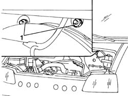
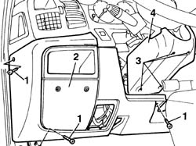
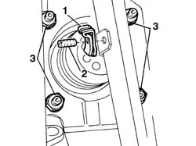
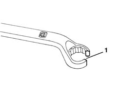
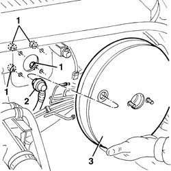

3330D10 BRAKE SERVO - R+R - INCLUDES SEPARATION FROM MASTER CYLINDER (PUMP)
- Path
- Procedures > 33 BRAKING SYSTEM > 3330 HYDRAULIC BRAKING SYSTEM > 3330D BRAKE VACUUM SYSTEM > 3330D10 BRAKE SERVO - R+R - INCLUDES SEPARATION FROM MASTER CYLINDER (PUMP)
- Kind
- repair procedure (removal / refitting; the operation number is the code)
- Applies to
- all engines; all production periods
- Interactive page
- https://sloeber94.github.io/elrnDB-fDct/en/#/244001109
Applies to: all engines; all production periods
 Removing
Removing
 Refitting
RefittingOp. 3330C30 BRAKE FLUID RESERVOIR - R + R AND WASH INSIDE
Op. 3330C10 MASTER CYLINDER (PUMP) - R + R
1. Working via the engine compartment, undo the nuts fixing the pedal assembly to the bodyshell.

Applies to: all engines; all production periods
1. Working from inside the vehicle, undo the bolts fixing the lower dashboard trim.
2. Remove the lower dashboard trim.
3. Undo the fixing bolts.
4. Remove the lower steering column trim.

Applies to: all engines; all production periods
1. Remove the spring fastening the brake servo push rod to the brake pedal.
2. Remove the pin from the brake pedal.
3. Undo the nuts fixing the brake servo to the pedal assembly.
- Move the pedal assembly as far away as possible from the bodyshell.

Applies to: all engines; all production periods
- There are four nuts under the pedal assembly fastening the brake servo to the bodyshell.
1. To gain access to the nuts it is necessary to cut a 13 mm diameter key creating a slit of about 8 mm.

Applies to: all engines; all production periods
1. Undo the nuts fixing the brake servo to the bodyshell.
2. Disconnect the single-acting valve from the brake servo.
3. Remove the brake servo from the housing.

Applies to: all engines; all production periods
Refitting
Removing- Place the brake servo in position, connect the single-acting valve and tighten the brake servo fixing nuts.
 | Value - daNm | Fastening | Component | Ø |
|---|---|---|---|---|
. | 1.8 - 2.7 | Nut | BRAKE SERVO | M8 |
- Position the pedal assembly and secure it to the brake servo using the nuts.
- Attach the brake pedal to the brake servo push rod, insert the pin and secure it using the spring.
- Position the lower steering column trim and fasten it.
- Position the lower dashboard trim and fasten it.
- Working via the engine compartment, tighten the nuts fixing the pedal assembly to the bodyshell.
| Value - daNm | Fastening | Component | Ø |
|---|---|---|---|---|
. | 1.1 - 2.0 | Nut | PEDALS | M8 |